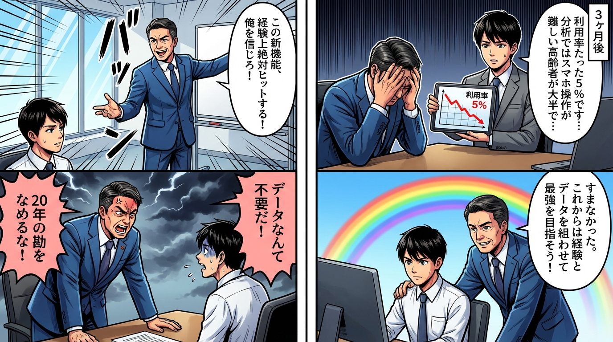

📚 学習漫画で理解する
第1章：なぜ「勘」ではなく「データ」なのか
人間の脳は、過去の成功体験や印象的な事例に引きずられます。これを「認知バイアス」と呼びます。
データが提供する3つの価値は、客観性（個人の主観を排除し、事実に基づいた判断）、再現性（成功パターンを数値で特定し再現可能）、予測力（過去のデータから未来のトレンドを予測）です。
あるアパレル企業では、「SNS広告は効果がない」という経営陣の直感がありました。しかし、データを分析すると、25〜34歳の女性層では購買転換率が12%と高いことが判明。ターゲットを絞った結果、ROIが3倍に改善しました。
第2章：測定すべきKPIの選び方
KPI（重要業績評価指標）は、目標達成度を測る具体的な数値です。しかし、「何でも測ればいい」わけではありません。
SMART原則で設計します。Specific（具体的）、Measurable（測定可能）、Achievable（達成可能）、Relevant（関連性）、Time-bound（期限付き）の5つの要素です。
先行指標（未来の結果を予測する指標）と遅行指標（結果を示す指標）を組み合わせることで、問題を事前に察知できます。
あるクラウドサービス企業では、売上だけを追っていましたが、KPIに「アクティブユーザー率」を追加したところ、30%未満のユーザーは90日以内に解約する傾向が判明。早期アラートで解約を30%削減しました。
第3章：データ収集の実践テクニック
データ収集には定量データ（数値で表せるデータ）、定性データ（言葉や感情で表されるデータ）、一次データ（自分で直接収集）、二次データ（既存の情報源から取得）の4つの方法があります。
データ収集の3つの落とし穴に注意が必要です。サンプル数不足、選択バイアス（既存顧客だけに聞いても離脱した顧客の声は拾えない）、質問の誘導を避けましょう。
あるECサイトでは、Googleアナリティクスで離脱率が高いページを特定し、ヒートマップツールでユーザー行動を可視化。さらに「送料が高い」というレビューも収集し、定量・定性両面から施策を導出しました。
第4章：データ分析の基本フレームワーク
記述統計でデータを要約します。平均値（全体の中心傾向）、中央値（外れ値の影響を受けにくい）、標準偏差（データのばらつき）を使います。
相関分析で2つの変数の関係を調べます。ただし、「相関≠因果」です。アイスの売上と熱中症には相関がありますが、アイスが熱中症を引き起こすわけではありません。
セグメント分析で顧客を年代・地域・購買履歴などでグループ化します。セグメント特有のパターンが見えてきます。
あるレストランチェーンでは、店舗を「駅前」「住宅地」「オフィス街」にセグメント化したところ、駅前店だけが前年比20%増だと判明。駅前店の成功要因を他店舗に展開し、全体売上が15%向上しました。
第5章：データ可視化の技術
人間は数字の羅列より、グラフや図の方が直感的に理解できます。適切な可視化は、複雑なデータを一瞬で伝えます。
折れ線グラフは時系列の変化、棒グラフはカテゴリ間の比較、円グラフは全体に対する割合、散布図は2変数の相関を見るのに適しています。
色使いの3原則：強調色で重要なデータだけを目立たせる、コントラストを十分にとる、色覚多様性への配慮（赤緑の組み合わせを避ける）。
あるスタートアップでは、30ページのExcelレポートをダッシュボードで「売上」「顧客数」「解約率」の3つのKPIだけを大きく表示する1ページに変更。意思決定スピードが2倍になりました。
第6章：データから洞察を引き出す思考法
データは「何が起きているか」を教えてくれますが、「なぜ起きているか」は人間が考える必要があります。
トレンド発見、異常値検出、セグメント差、季節性、相関からの仮説といった5つの洞察発見パターンがあります。
仮説検証のサイクルを回します。データから気づきを得る→仮説を立てる→追加データで検証する→施策を実行する→結果を測定する、という流れです。
あるサブスクサービスでは、解約理由が「価格が高い」だったため価格を下げましたが効果なし。さらに分析すると「最終ログインから30日経過したユーザー」の90%が解約していることが判明。14日ログインがないユーザーに自動メールを送る施策を導入し、解約率を15%から10%に削減しました。
💡 重要ポイント
- 勘ではなくデータで意思決定することで客観性・再現性・予測力を得る
- KPIはSMART原則で設計し、先行指標で早期に問題を察知する
- データ収集ではサンプル数不足・選択バイアス・質問誘導を避ける
- データ分析→仮説→検証→施策のサイクルを回して改善する